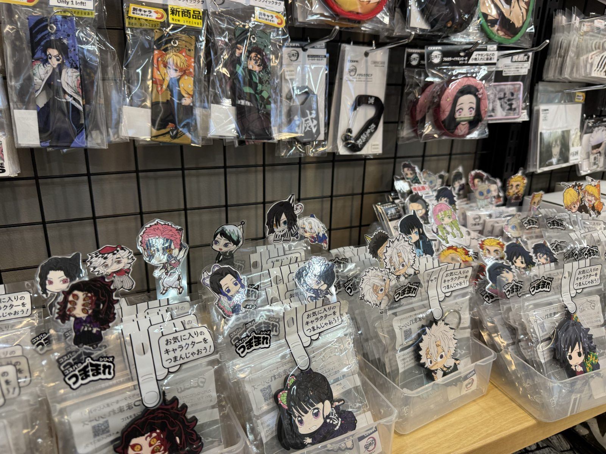
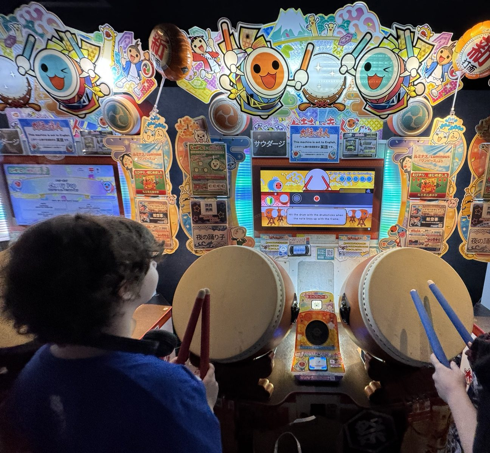

Tokyo · Nov 5 or 6, 2026
Three ways to spend the evening.
Three plans for a private tour, all 16:00 to 19:00. We start in daylight and end under the neon.
- Guide Yuuki
- Day Thu Nov 5 or Fri Nov 6
- Time 16:00 to 19:00


Tokyo · Nov 5 or 6, 2026
Three plans for a private tour, all 16:00 to 19:00. We start in daylight and end under the neon.
Course A · A little of everything
If you are not sure what you like yet, this is the safe and fun one. A shrine at sunset, the famous figure building, hundreds of capsule toys, retro games, an arcade, and the main street lit up at night.

All on foot, about 2.5 km. Short and flat, with breaks inside the shops. Open the route in Google Maps ↗
Good for First-timers, mixed groups, anyone who wants to see the whole district in one evening.
Keep in mind The sun sets around 16:40 in early November, so we do the outdoor photos first and the neon at the end. Closing times will be re-checked once the date is fixed.
Course B · Built around the series you love
Tell me the anime or games you love, and we go straight to the shops that have them. New goods first, then the used and rare shops where fans find things they cannot get at home.
All on foot, about 2 km. The shops are close together. Open the route in Google Maps ↗
Good for Fans with a favorite series or character. Collectors.
Keep in mind Send me the names of the series you love before the day, and I will change the shops and floors to match. The sun sets around 16:40 in early November, so we do the outdoor photos first and the neon at the end. Closing times will be re-checked once the date is fixed.
Course C · The old electric town and the arcades
Akihabara before anime: tiny electronics stalls under the train tracks. Then retro consoles, rhythm games and fighting games, and the arcades at night.
All on foot, about 2 km. Open the route in Google Maps ↗
Good for Gamers, retro fans, people who have seen Akihabara before.
Keep in mind The sun sets around 16:40 in early November, so we do the outdoor photos first and the neon at the end. Closing times will be re-checked once the date is fixed.
Akihabara Station, Electric Town exit, at 16:00.
Come out of the Electric Town exit and Radio Kaikan is the tall building straight ahead.